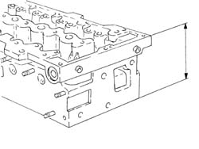

1016E38 single cylinder head or (one) l or r, removed - grinding
- Path
- Procedures > 10 ENGINE > 1016 CYLINDER HEAD(S) > 1016E cylinder head/s - various operations > 1016E38 single cylinder head or (one) l or r, removed - grinding
- Kind
- repair procedure (removal / refitting; the operation number is the code)
- Applies to
- engines: 1.4 8v, 1.3 JTD 16V; all production periods
- Interactive page
- https://sloeber94.github.io/elrnDB-fDbl/en/#/2585306
Applies to: engines: 1.3 JTD 16V; all production periods
Check that the flatness of the lower cylinder head plane corresponds to the recommended values.
Measurement | Value | ||
|---|---|---|---|
- | Lower plane planarity (mm) | 0.1 |
If lower surface flatness of the lower cylinder head is not within specified values, grind from the nominal head height and then fit a new gasket with the number of notches determined as described below.
The head may be levelled to 0.1 m if starting from a gasket with 0 notches and using a new gasket with 1 notch.
The head may be levelled to 0.2 m if starting from a gasket with 0 notches and using a new gasket with 2 notches.
The head may be levelled to 0.1 m if starting from a gasket with 1 notch and using a new gasket with 2 notches.
Measurement | Value | ||
|---|---|---|---|
- | Nominal height (mm) | 105.5 ± 0.05 |

Applies to: engines: 1.4 8v; all production periods
- Check cylinder head flatness and if necessary flatten the lower cylinder head surface. It is permitted to remove 0.1 mm of material from the minimum cylinder head height.
Subject | Value | |
|---|---|---|
- | Minimum permitted cylinder head height (mm) | 126.5 +/- 0.1 |